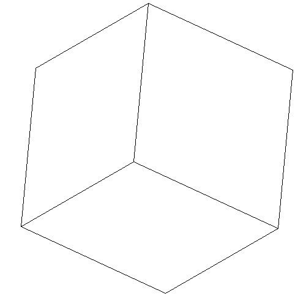
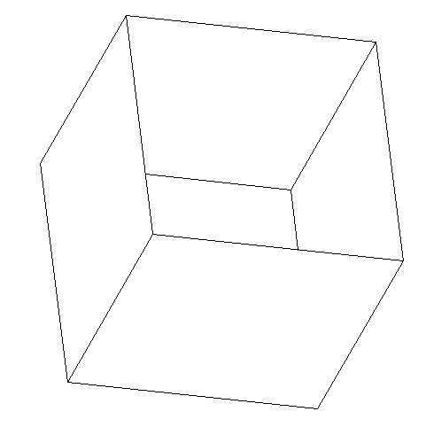

24.05.2024
В нашей задаче нужно реализовать метод, который будет считать площадь всех граней. Для этого реализуем в классе Polyedr метод count_area, который будет выполнять поставленную задачу.
В методе count_area мы рассматриваем все грани с начальными координатами (мы ранее отдельно создали списки, где хранятся вершины, рёбра и грани с непреобразованными координатами). Для каждой грани мы сначала задаём переменной count_of_good_points значение 0. Далее мы рассматриваем все вершины данной грани. Так как в задаче не сказано, на какую плоскость мы проецируем точку, мы рассматриваем три плоскости: XOY, XOZ, YOZ. У нас центр находится в начале координат, поэтому нам для каждого случая нужно лишь проверить, будет ли какая-то точка меньше, чем -0.5 или больше, чем 0.5. Например, в случае проекции на плоскость XOY мы смотрим такие варианты: \(x < -0.5\), \(x > 0.5\), \(y < -0.5\), \(y > 0.5\). Если хотя бы один из этих случаев выполняется, то точка находится строго за пределами квадрата, а следовательно, эта точка является «хорошей». Таким образом, мы к переменной count_of_good_points прибавляем единицу. Однако если значение этой переменной превышает 2, то мы заканчиваем рассматривать эту грань, так как по условию задачи число «хороших» точек в грани не больше двух. Если же проверены все вершины и количество «хороших» точек меньше или равно 2, тогда мы считаем площадь грани.
Чтобы посчитать площадь грани, мы используем программу «Выпуклая оболочка», а точнее те файлы, которые помогают посчитать площадь фигуры. Мы пользуемся формулой \[\sqrt{(a.x - c.x) * (b.y - c.y) - (a.y - c.y) * (b.x - c.x)}.\] В итоге, мы получим для грани площадь и прибавим её к атрибуту self.area, который мы задали в самом начале (равным 0).
Такие действия проделываем для каждой грани. Задача решена.
Для проверки правильности решения задачи было написано несколько тестов. Основные из них - это тесты на площадь двух граней, куба и «коробки».
Для этих случаев программа вычисляет правильные результаты: \(25\), \(2\) и \(1\).


pandoc -s -o report.html –mathjax report.md –template=default.html5
pandoc -s -o report.pdf report.md –template=default.latex
pandoc -s -o report.docx report.md
Метод count_area:
def count_area(self):
for facet in self.no_changed_facets:
count_of_good_points = 0
for vertex in facet.vertexes:
if ((vertex.x < -0.5 or vertex.x > 0.5 or
vertex.y < -0.5 or vertex.y > 0.5) and
(vertex.x < -0.5 or vertex.x > 0.5 or
vertex.z < -0.5 or vertex.z > 0.5) and
(vertex.z < -0.5 or vertex.z > 0.5 or
vertex.y < -0.5 or vertex.y > 0.5)):
count_of_good_points += 1
if count_of_good_points > 2:
break
else:
figure = Void()
for vertex in facet.vertexes:
figure = figure.add(R2Point(vertex.x, vertex.y))
self.area += figure.area()Тест ccc:
class TestPolyedr4(unittest.TestCase):
@classmethod
def setUpClass(cls):
fake_file_content = """40.0 45.0 -30.0 -60.0
8 2 8
0.0 0.0 0.0
5.0 0.0 0.0
5.0 5.0 0.0
0.0 5.0 0.0
1.0 1.0 3.0
6.0 1.0 3.0
6.0 6.0 3.0
1.0 6.0 3.0
4 1 2 3 4
4 5 6 7 8"""
fake_file_path = 'data/holey_box.geom'
with patch('preoptimize.polyedr.open'.format(__name__),
new=mock_open(read_data=fake_file_content)) as _file:
cls.polyedr = Polyedr(fake_file_path)
_file.assert_called_once_with(fake_file_path)
def test_num_vertexes(self):
self.assertEqual(len(self.polyedr.vertexes), 8)
def test_num_facets(self):
self.assertEqual(len(self.polyedr.facets), 2)
def test_num_edges(self):
self.assertEqual(len(self.polyedr.edges), 8)
def test_area(self):
self.polyedr.count_area()
self.assertAlmostEqual(self.polyedr.area, 25.0)